Чтобы сохранить информацию, для которой нет подходящего поля в документе или справочнике, можно создавать дополнительные поля.
Дополнительные поля отображаются:
- в списках документов и внутри документов — например, в Отгрузке, Заказе покупателя, Оприходовании;
- в справочниках — основных, созданных в МоемСкладе по умолчанию, и дополнительных;
- в позициях Заказов покупателей — для товаров, услуг, комплектов и партий в Заказе покупателя можно выводить важную информацию о позициях: дополнительные характеристики (габариты товара, цвет), особенности (наличие дефектов товара или упаковки) или иную информацию (сопутствующие товары и услуги, примечания для сотрудников).
Доступно только если включена настройка Включить отображение дополнительных полей товаров и услуг в позициях документов. Подробнее см. Настройки компании.
Доступно только в новом дизайне Заказов покупателей.
Дополнительные поля можно использовать при фильтрации, массовом редактировании, импорте и экспорте.
Максимальное доступное количество дополнительных полей для одного типа объектов — 100. То есть можно добавить 100 дополнительных полей в товары, 100 — в Отгрузки и так далее.
Для вывода полей на печать можно создать дополнительные шаблоны.
Дополнительные поля используются при синхронизации с интернет-магазинами. Информация из заказа интернет-магазина попадет в Заказ покупателя в МоемСкладе, если название и тип данных дополнительного поля и поля из интернет-магазина совпадают.
Если в связанных документах создать поля с одинаковыми названиями и типами, при создании одного документа на основе другого значение из поля скопируется.
Настроить количество полей, которое будет отображаться в строке документа, можно в настройках пользователя.
Для разделения товаров с одним артикулом по цветам, размерам и прочим подобным характеристикам, рекомендуем использовать модификации товаров.
Создание дополнительных полей
- Перейдите в список документов или в справочник, к которому нужно добавить поле.
- Откройте настройки дополнительных полей, для этого нажмите на кнопку с шестеренкой в правой части экрана.
- Для добавления поля нажмите на кнопку +Поле.
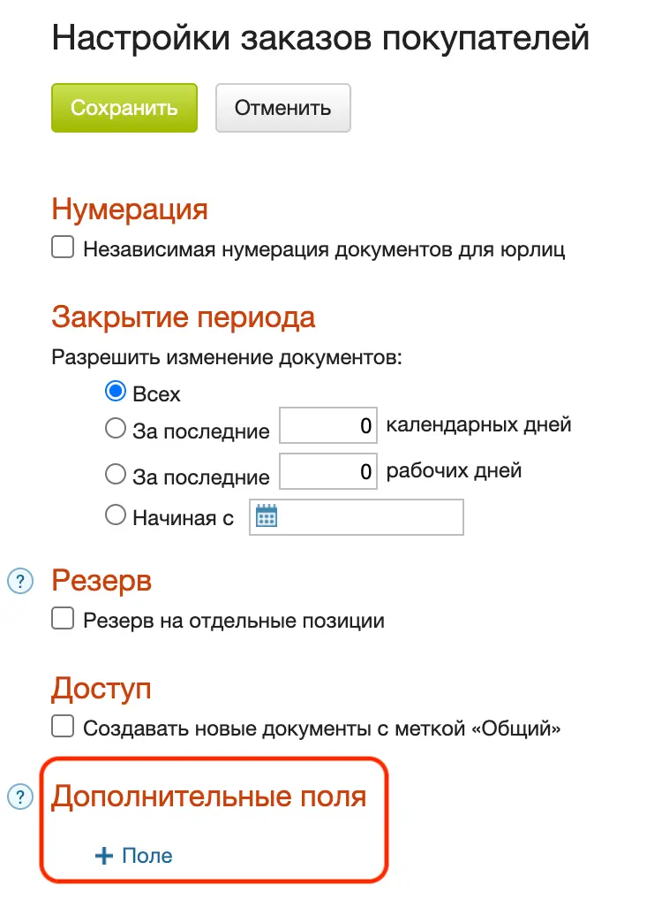
Заполните настройки:
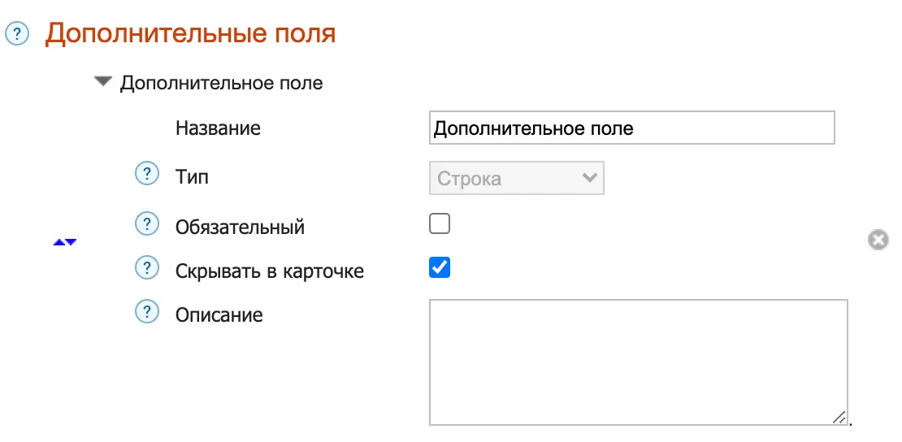
- Название — название поля, которое будет видно пользователям.
- Тип — тип данных, которые будут храниться в поле.
После сохранения изменить тип поля будет нельзя.
- Обязательный — установите флажок, если хотите, чтобы пользователи обязательно заполняли это поле; документ не сохранится, пока пользователи его не заполнят.
- Скрывать в карточке — установите флажок, если хотите скрыть поле: оно не будет отображаться в документе. Это необходимо, когда при установке приложений в документ добавляются ненужные поля или если поле сейчас вам не нужно, но и удалять из системы вы его не хотите. В списках документов и фильтрах поле сохраняется. Обязательное поле скрыть нельзя — сначала снимите флажок в строке выше.
- Описание — показывается по нажатию на значок подсказки слева от поля.
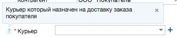
Для сохранения изменений нажмите кнопку Сохранить.
Типы полей
Вы можете выбрать тип поля, наиболее подходящий для вашей задачи:
Справочник
Для выбора значения из списка. Например, выбор способа оплаты из дополнительного справочника или выбор курьера из справочника сотрудников.
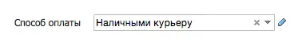
Вы можете создать новый справочник. Для этого нажмите кнопку + справа от строки выбора справочника. В появившемся окне укажите наименование нового справочника. Нажмите кнопку Сохранить.
После сохранения поля выбранный справочник нельзя будет изменить.
Строка
Для короткого текста. Например, почтового индекса, адреса или телефона. Максимальное число символов — 255. Допускаются цифры, кириллический алфавит, латинский алфавит, специальные символы.
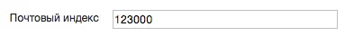
Текст
Для длинного текста, поддерживает перенос строк. Например, дополнительный комментарий или описание. Допускаются цифры, кириллический алфавит, латинский алфавит, специальные символы.
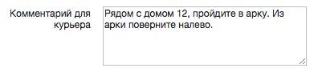
Число целое
Для целых значений. Например, для указания габаритов. Максимальное число символов — 19. Допускаются только цифры.
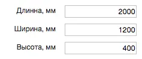
Число дробное
Для чисел с дробной частью. Например, для описания свойств товара. Допускаются только цифры, запятая и точка.
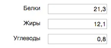
Флажок
Чекбокс для значений типа да/нет. Например, для описания наличия у товара какой-либо характеристики.
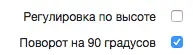
Дата
Для выбора даты и времени из календаря. Например, дата выдачи доверенности или срок ее действия.
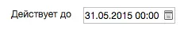
Файл
Кнопка Прикрепить файл для добавления файлов. Например, отсканированного договора или инструкции по сборке. Файлы JPG и PNG пользователи смогут увидеть прямо в браузере, другие типы файлов пользователи смогут скачать на компьютер.
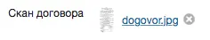
Ссылка
Для адреса в интернете. Например, ссылка на карточку товара в интернет-магазине. При щелчке ссылка откроется в новой вкладке браузера.
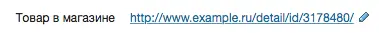